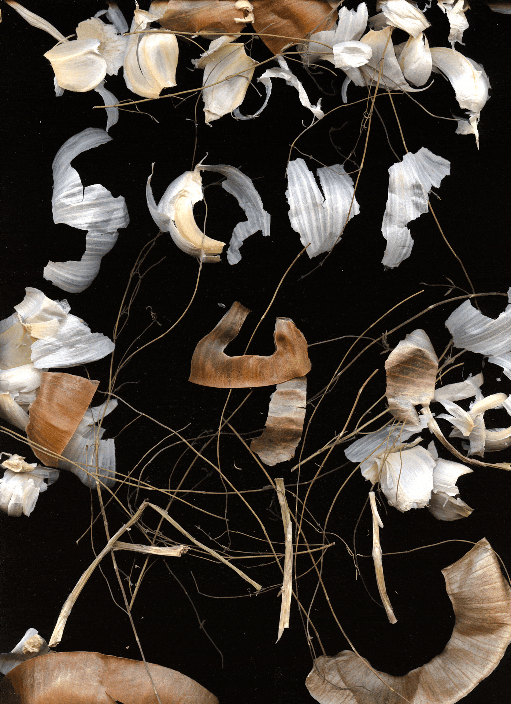

| ID | Name | Type |
|---|---|---|
| 70 | Soup for All, Scraps for All | Scanner Art |

Details
Every week, a group of us makes soup for our neighbors that live in the parks. And while the main event is definitely the delicious soup we make, the soup itself is just a starting node for a multitude of things that happen from a soup night. I think about the generative conversations that happen when the pots are simmering, or the soup stories that people share with me as they're trying our latest chili. Aspirationally, I think about how even if its just a drop in the broth, that each collective soup-making and soup-consuming session is a collective practice in rethinking how we sustain each other.
I think about the food scraps, the paper-like onion and garlic skins. Recently, people print held a pulp session, where we made new paper from scraps. The scraps were a combination of leftover cuts from art prints, misprints, random packaging filler, and other random paper that just gets accumulated over a period of time in art-making. The notion of creating anew from the discards is obviously appealing, this idea of cycles and loops, this hope for restoration and upcycling, to eject from the transaction of consume and waste and into a relationship of seasons and rebirths.
So I assembled the food scraps from our latest soup night to spell out Soup for All, and then rearranged it to Scraps for All, even in scraps, the transformation continues.
And indeed, I think the challenge is that even the notion of giving something a second life, or repurposing something to be something new, doesn't fully capture the beauty and essence of a scrap. Even if the scraps were not used to spell out the letters, even if they were not scanned and admired, the scraps on their own are meaningful.
The food scraps, the paper remnants, the extras, the unused, the trash, the misprints, the leftovers, they are not just byproducts of what's being produced, they are proof of the process. The onion skin is an archive that soup-making is a labor of love, and a thin slip of purple paper is a receipt for a long night of paper cutting and assembling.
There is beauty in looking at scraps and discovering new worlds, to reimagine them into new contexts and giving them new life. But there is true, deep meaning in looking at scraps and understanding that this is actually the whole point, that in some ways, the scraps are more important than the soups themselves, than the art prints themselves. The scraps hold the evidence that soup is about community, that art-making is about how we communicate and relate to each other. We generate scraps in the process, and the scraps in return remind us of the process.
